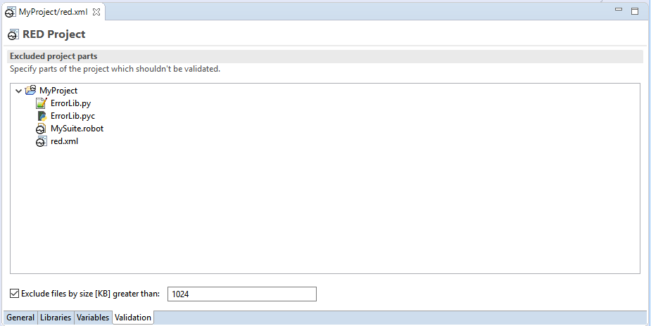

The red.xml is a file which stores project related setting - some of those controls editing phase (validation, code assistance etc.) while the other can influence RobotFramework execution.
It is always located in project root directory.
The red.xml file is automatically created when Robot project is created (e.g. by using
File -> New -> Robot Project action).
In case you're importing Robot files to generic Eclipse project you need to make the project Robot-specific by
selecting Robot Framework -> Add Robot nature action from context menu of the project.

In any case red.xml file shall be visible in Project Explorer in root folder.
RED provides dedicated editor for red.xml file which is normally opened by double clicking on it in Project Explorer. Beside that the file is textual and contains XML content and can be edited by any text editor.
Editor for red.xml is divided into 4 groups in which different aspect of project configuration can be modified. The groups are represented by tabs visible at the bottom of the editor area: General, Libraries, Variables and Validation.
This section allows to choose python interpreter for the project other than the one defined at
Window -> Preferences -> Robot Framework -> Installed frameworks preference page.

This section stores informations about Robot external libraries being used together with the paths required for Python.
Libraries part - holds a list of discovered or manually added libraries which are used to generate library specifications in order to provide proper validation, content assistance etc. For more information see Recognizing external libraries in RED topic.
Paths - holds settings for user defined PYTHONPATH/CLASSPATH which are used when
RED is communicating with Robot (e.g. for libraries discovery or variable files imports) as well as when launching
tests execution. The paths here may be absolute or relative and in latter case the relativity can be changed between
WORKSPACE/PROJECT locations. For more information see
Custom PYTHONPATH/CLASSPATH and path relativeness topic.
This section stores settings regarding Robot variables.
Variable mappings - in this section values can be assigned to variables in order to help RED resolved paramerized imports. For more information see Variable mappings topic.
Variable files - this section specify variable files which should be visible in global scope. Those global variable files are used during test case edit and validation. For more information see Global variable files topic.

This section allows user to limit validation to selected folder or exclude selected folder(s) from validation. To exclude folder in Project right click on folder and choose Exclude from menu. Files can be also excluded by fixed size [KB]. For more information see Limiting validation scope topic.
